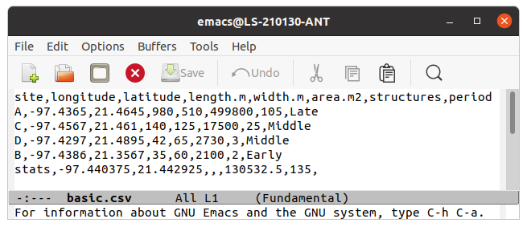
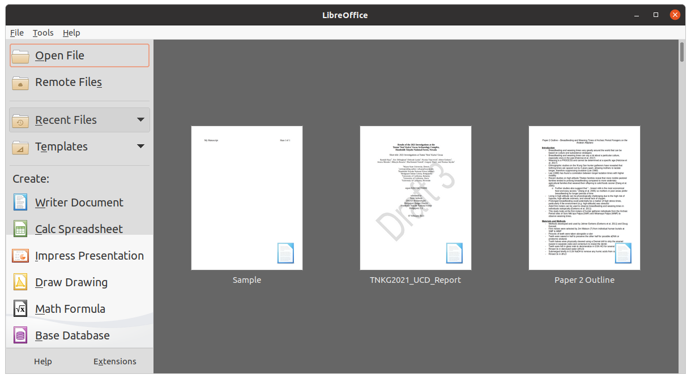
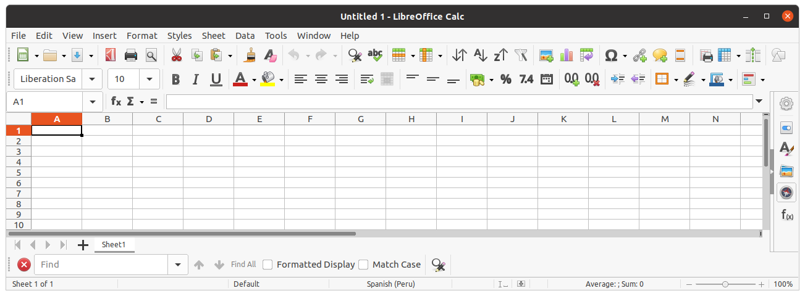
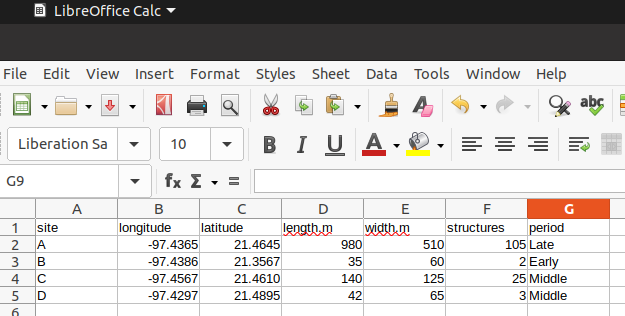
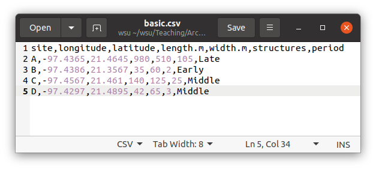

Spreadsheets with LibreOffice Calc: A step-by-step tutorial
In this step-by-step tutorial, you will learn how to create and use an archaeological spreadsheet using the free, open-source software called, LibreOffice Calc. You will begin by creating a simple spreadsheet of fictious data and calculations that will look as follows:

Many archaeological analyses require examination of datasets that consist of many observations. Human cognitive capacity constrains our ability to effectively manage and synthesize such large datasets. In order to derive insight from them, there are a number of computational tools available–statistical, database, and spreadsheet software. Here, you will learn how to enter, manage, and access data using a spreadsheet.
A spreahsheet is a table of data that can be easily compiled and edited by individual users or small groups of users with few constraints. Spreadsheets are different from databases, which are more structured collections of related data tables that are often edited and accessed by many users (think banking databases). We will not engage with databases here, though they can be quite useful for archaeological research. Rather, we will focus on spreadsheets, which are more flexible and accessible to a wider range of users. Anyone can create and effectively deploy a spreadsheet without any advanced computer training.
There are many spreadsheet software packages to choose from. This tutorial introduces LibreOffice because it is particularly powerful, free, open source, cross-platform, well documented, and has a large user community base. Moreover, LibreOffice resides on your computer–not the cloud–which is essential for archaeologists working in settings without Internet access.
This step-by-step tutorial will take you through the process of creating and using an archaeological spreadsheet with an emphasis on commonly used procedures and tools. The process will be presented using actual archaeological data as examples. Although only basic functions are presented here, they are the foundations of more comlicated calculations and visualizations that can be performed in Calc. However, I recommend such computation using R statistical computing environment for such computations. R is the subject of another tutorial. The power of Calc is in simple data entry and management.
Installation
To complete this tutorial, you must install LibreOffice on your computer. LibreOffice is available for Windows, Mac, and Linux operating systems. Follow the installation instructions provided on the LibreOffice website. Instructions will vary by operating system and version. This tutorial is based on LibreOffice version 7.5.0. This tutorial is furthermore produced on linux Ubuntu 20.04 operating system, which may entail small (but sometimes frustrating) differences for users working with Mac or Windows operating systems.
Open a new spreadsheet
- Open LibreOffice. Use your favorite method, typically double-click on the LibreOffice icon on your Desktop or other location. I prefer to open a command line terminal and enter
libreoffice. This may seem silly, but it is actually the fastest way to open the software once you get used to it. Whatever approach you take, the following screen will appear:

- Click the green table icon that says "Calc Spreadsheet" to open a new spreadsheet document.
- A blank spreadsheet will appear as a grid with numbered rows and lettered columns. Each box of in the grid is called a cell. When you open the spreadsheet, cell 1A is highlighed and active. It will looks something like this:

Enter and save data
- With cell 1A highlighted, type "site", and hit enter. We've created a column called sites, which will contain archaeological site names.
- In cell 2A, enter, "A". You can see that we are starting to create a list of sites in column A, starting with site A.
- Go down column A, iteratively entering the following site names: "B", "C", and "D" into rows 3, 4, and 5, respectively.
- Let's take a moment to save your document. You can simply click "File" from the File menu bar and select, "Save As". Alternatively, you can use the keyboard shortcut, "Ctrl+s" (holding down the Ctrl key, hit the letter "s"). I highly recommend using this keystroke shortcut and making it a regular habit to use it periodically while drafting a document. Getting into this habit will reduce the chances of catastrophic data loss (though, LibreOffice does have a robust document recovery system).
- Place your cursor in cell 1B, and enter "longitude". Longitude refers to geographic coordinates, which is a commonly recorded attribute of archaeolgoical sites.
- Enter the following longitude values: -97.4365, -97.4386, -97.4567, -97.4297
- Add a third column called latitude, and enter the following values: 21.4645, 21.3567, 21.4610, 21.4895
- Add the following four additional columns and associated data:
- length.m: 980,35,140,42
- width.m: 510,60,125,65
- structures: 105,2,25,3
- period: Late Period, Early Period, Middle Period, Middle Period
- Note that the ".m" associated with length and width is to remind us that the units are meters.
- Your spreadsheet should look something like this:

If so, you've successfully created a basic spreadsheet. Have you saved recently? Take a moment to do so (Ctrl+s).
Format cells
- Notice that the latitude for site C looks different than the rest–it'one digit short because Calc has automatically left out the zero. For most purposes, this is not a problem, but sometimes we want to be explicit that the zero is meaningful. To specify the number of significant digits, we can format the column.
- To do that, right click on the letter C of Column C, and select Format Cells in the dropdown menu.
- In the Numbers tab, under Options, set the Decimal places to 4, and click OK. You should now see the zero re-appear in the latitude value of site C.
- Have you saved recently? Take a moment to do so (Ctrl+s).
Output data
There are many ways to output your data from a Calc spreadsheet to use for other purposes. We will explore three–copy-and-paste, comma separated value output, and excel output.
Copy-and-paste
Often, you simply need to display a relatively small data table in a word processing document. To do that, a simple copy-and-paste will accomplish that, but there's a trick.
- Select your data cells for the spreadsheet you just created by left-clicking on cell 1A and dragging to the lower-right most cell in your table.
- With the data highlighted, copy the data either using the keyboard shortcut, Ctrl+c, or by selecting Edit, Copy from the File menu bar.
- Open a blank LibreOffice Writer document by selecting File, New, Text document in the File menu bar. A blank word-processing document will appear.
- Right click in that blank document, and click Paste Special, Paste Special.
- Select Rich text formatting (RTF) from the list. Your table should appear in the document. It can be formatted to your liking or style-guide instructions. See the LibreOffice Writer tutorial to learn how to format a table in American Antiquity style.
- Why did we use the RTF format? Why not simply paste the table as is? Indeed, you can do that, but in my experience, all other pasting formats are difficult to work with. RTF offers a clean table that can be easily formatted using standard word processor tools. Nonetheless, feel free to explore other paste options to find one that works well for you.
Comma separated value and Excel formats
A number of common data sharing and analysis tasks require comma separated value (csv) or Microsoft Excel (xls and xlsx) formatted data tables. Csv files are simple, non-proprietary text files (a type of file known as an ascii file) that virtually any word-processing or data analysis software can read. Csv format is an excllent format for data sharing (e.g., including as supplementary material to a paper or web-sharing of data) because it will be accessible to anyone regardles of preferred computing platforms of software. I therefore recommend the use of this format for most purposes. However, it is common to work with colleagues who are unfamiliar with this format and are simply more comfortable with Excel files (xls or xlsx). This section explains how to create csv and xls files from your Calc spreadsheet (ods).
- Select File, Save a Copy from the File menu bar.
Although you could also do this using the "Save As" option, it's often preferable to use Save a Copy so that your Calc (ods) document remains open for additional editing. Moreover, a csv file will not save any special formatting or formulas that you might want to access later (more on formulas below).
- In the pop-up window, select the directory where you would like to store you file.
- From the dropdown menu in the lower right, select Text CSV (.csv).
- Type a name in the Name entry box. This will default to the same name as your Calc file, which you can simply accept. Make sure that the extension, ".ods" does not appear in the Name. If so, delete.
- Click the Save button in the top right corner of the pop-up window.
- Another pop-up window, titled Export Text File, will appear. Make sure it has the following settings:
- Character set: Unicode (UTF-8)
- Field delimiter: ,
- String delimiter: "
- Uncheck all check boxes.
- Click OK. You've now output a csv file.
- Use your computer's file browser to navigate to the csv file you just created.
- Right click on your csv file, choose Open With Other Application, and open with Text Editor. Note that this step will differ by operating system. You are looking to open the file with a basic text editor such as Notepad.
- You should see a simple comma-separated data file that looks like this (again, details will vary):

- There is nothing more to do here. This just shows you what a csv file is and helps you understand why its so flexible for the purpose of data sharing.
- Close your csv file.
Calculations
Calc makes basic calculations simple. Here you will learn to do basic arithmetic and produce summary statistics.
Summing
Suppose you would like to sum the number of structures found among your archaeological sites. This is a fairly simple calculation, but Calc makes it even simpler.
- Type, stats, in cell 7A. This is simply for reference.
- Click once on cell 6F, which is just below your last structures value.
- Type
=sum(
- Click and drag across cells 2F to 5F (all of the structures values).
- Type
) and Enter.
- You should see a new value appear, 135, which is the sum of the longitude values.
Double click on your sum cell, 6F. You should see you value change to your formular. If you ever need to edit a formula, this is one place you could do that. We will not make any changes here, so just hit your escape key (Esc) for now.
Averaging
Suppose you would like to find the center point of your study area. To do this, you can find the average of your latitude and longitude values. This would take a little time by hand, but calc makes it quick and easy.
- Click once on cell 6B, which is just below your last longitude value.
- Type
=average(
- Click and drag across cells 2A to 5A (all of the longitude values).
- Type
) and Enter.
- You should see a new value appear, -97.44037, which is the average of the longitude values.
- Notice that this new value has added an extra decimal place, which may reflect a degree of false precision given that the longitude data are resolved to four decimal places. Fix this by following the earlier instruction on formatting cells.
- While you could reproduce the above steps to find the average of the latitude values, here's a convenient shortcut: single click on cell 6B (the cell with your average longitude). You will see a thick black line highlighting the cell, and a handle (small square) on the lower right. Click and drag than handle into cell 6C. You should now see the average of the latitude values.
- Note that there are many other basic statistical functions that can be easily performed in this way–minimum (
min), maximum (max), standard deviation (std), median (median), and more. Feel free to experiment, and consult the LibreOffice help or web as needed.
Arithmetic
Suppose you would like to estimate site area using the length and width measurements for your site. Area is simply lengt * width, which Calc can solve quickly. Note that the asterisk is a typical symbol used for multiplication.
- Add a new column after the width.m column by right clicking on column F and selecting Insert Columns Before.
- Enter "area.m2" into cell 2F for our column header. The "m2" indicates that the units are square meters.
- Select cell 2F.
- Type
=
- Click on cell 2D, which is your first length.m value.
- Type,
*
- Click on cell 2E, which is your first width.m value.
- Enter. You should now see the calculation result.
- Again, you could repeat this for each row to estimate the area for the other sites. However, you can use the shortcut described about by clicking and dragging the selection handle on cell 2B to cell 2D. The area will be calculated for all sites.
- Now that you found the site area for your five sites, add a forumula to cell 6F that calculates average site area.
- Note that there are many other basic arithmetic functions that can be easily performed in this way–addition (
+), subtraction (-), division (/), raising to a power (^), and more. Feel free to experiment, and consult the LibreOffice help or web as needed.
- Have you saved recently? Take a moment to do so (Ctrl+s).
Sorting
Suppose you would like to organize your table by site size.
- Click and drag your cursor to highlight cells 1A to 5H. Warning: When sorting data tables, always remember to always select all relvant cells. If you sort data without doing so, you will indpently sort data and thus lose information. For example, if you sort the site size column here without highlighting the other fields, and you save the result, the next time you open your file, you will not know which site size values belong to which sites. I have seen massive data collection efforts completely upended because of this mistake, and this is one reason to consider using relational databases, which have safeguards against such mistakes. But spreadsheets still have their place. Just be aware of this problem and consider yourself warned.
- Select Data, Sort from the File menu bar.
- In the Sort pop-up menu, open the Options tab.
- Make sure that "Range contains column heads" is checked.
- Go back to the Sort Criteria tab.
- Select area.m2 from the Sort Key 1 dropdown, and check Descending.
- Click OK. You should now see your sites organized from largest at the top to smallest at the bottom.
- That concludes your work with the basic.ods file. Save your file and close the file.
Import data
Often you will need import data that are not in ods format–csv, xls, xlsx, dbf, txt, to name a few. Simply open LibreOffice Calc, and open those file formats in the same way that you would open an ods file.